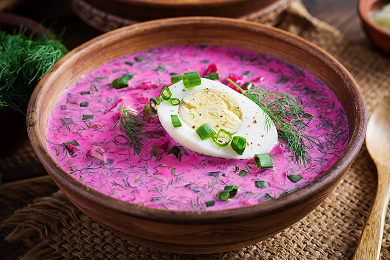

Saltibarsciai

Ingredients
- 1 litre Kefi
- 400g Pickled beets
- 2 Cucumbers
- 1 bundle Spring onions
- 1 bundle Dill
- Pinch of Salt
- 2 Boiled eggs
Preparation
- Cut the cucumbers into small pieces. Finely chop the onion leaves and dill.
- Mix kefir well with salt. Add pickled beets (with all liquid), onion leaves, and cucumbers. Mix it up.
- You can serve saltibarsciai immediately after making it, but they are tastier when they are kept for at least 1-2 hours in the refrigerator.
- Serve garnished with boiled eggs. Boiled potatoes are very good on the side.
Tip
-
If you like saltibarsciai with a milder taste, you can make it with boiled beets - cut them
into straws. In this case, you can add a splash of apple cider vinegar to the frosting.
Back